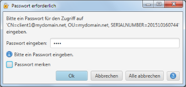

Passwort erforderlich
Dieser Dialog erscheint immer, wenn auf ein Passwort-geschütztes Objekt zugegriffen wird (e.g. auf einen privaten
Schlüssel im Rahmen der Signierung oder eines Imports).

Der Meldungstext zeigt dabei an, für welches Objekt das Passwort erforderlich ist. Ist das eingegebene Passwort
ungültigt, so wird der Dialog erneut angezeigt. In einem solchen Fall zeigt eine zusätzliche Meldung den
Grund für die Neueingabe an.
Durch Auswahl der "Passwort merken"-Option wird das eingegebene Passwort für die laufende Operation gespeichert
und automatisch verwendet, wenn das nächste mal ein Passwort erforderlich ist (z.B. beim Import mehrerer Zertifkate).
Sobald das Passwort f¨r einen Zugriff nicht passt, wird der Dialog erneut angezeigt und ein anderes Passwort
abgefragt.
Die Auswahl von "Abbrechen" bricht den aktuellen Zugriff ab. Die Auswahl von "Alle abbrechen" bricht alle Zugriffe
innerhalb der aktuellen Operation (z.B. Import) ab.